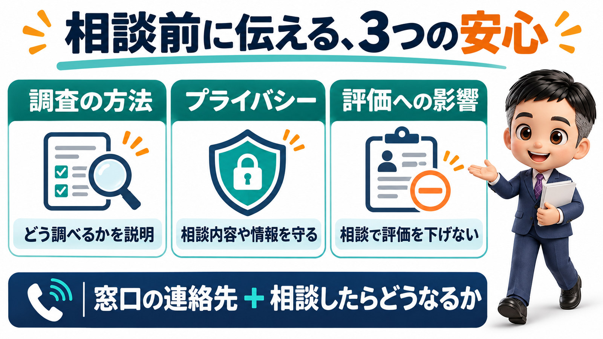
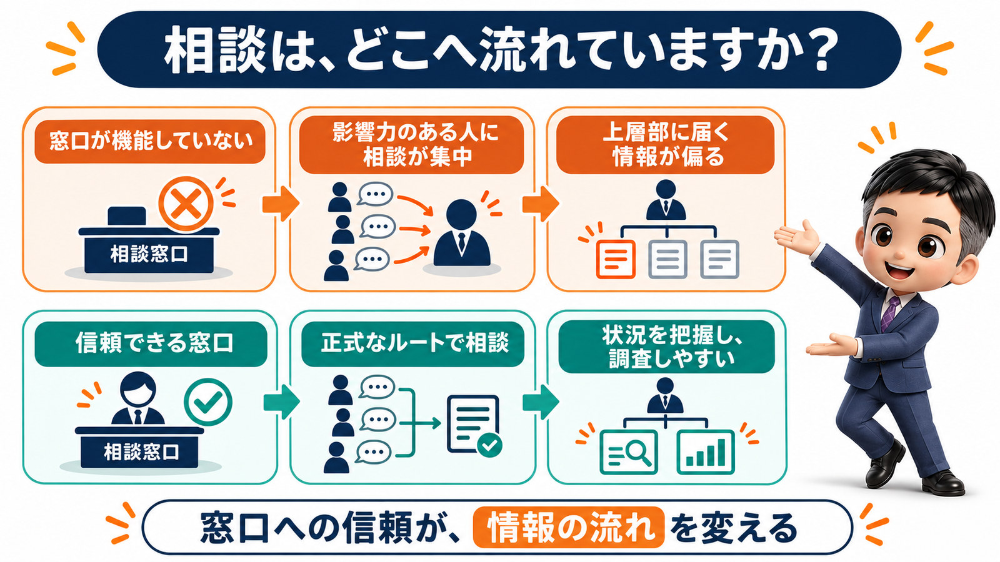

相談窓口は、雇用契約書に書くだけでは誰も相談しません。機能していないと、相談は社内の声の大きい人に集まります。
今日は、相談窓口の話をします。
会社には、相談窓口を設けないといけないことになっています。
まずはその話をして、最後に、会社が相談窓口を設置したくなる意外な理由をお伝えします。
先に結論を言っておきます。
相談窓口が機能していないと、相談は社内の声の大きい人のところへ行きます。
そうなると、会社が少しずつ歪んでいきます。
会社が設ける相談窓口は、主に2つです。
相談窓口は他にもありますが、今日は2つだけ押さえておいてください。
1つ目は、ハラスメントに関する相談窓口です。
2つ目は、同一労働同一賃金の待遇差に関する相談窓口です。
ハラスメントの窓口は、5つの相談を受けます。
ハラスメントの相談窓口で受けるのは、主に5つです。
パワハラ。
セクハラ。
マタハラ(マタニティハラスメント)。
ここに、最近できたものが2つ加わりました。
カスハラと、就職活動中の方など求職者に対するセクハラです。
どちらも、2026年10月1日から対策が会社の義務になっています。
令和7年労働施策総合推進法等の一部改正について(厚生労働省)
待遇差の窓口は、アルバイトさんの疑問に答える場所です。
もう1つが、同一労働同一賃金の待遇差に関する相談窓口です。
「なんで正社員にはこの手当があるのに、我々にはないんだ」
アルバイトさんから、こう聞かれたときに、きちんと説明できる窓口を設けましょうということです。
この相談窓口は、パートや有期の方を雇い入れるときに、労働条件として明示する事項の一つになっています。
雇用契約書に「一応」書いてあるだけ、という会社は多いと思います。
基本的には、雇用契約書に相談窓口の部署や電話番号が書かれていると思います。
一応、相談窓口はここにありますよ、という感じです。
でも、この「一応」になっている会社さん、結構あるのではないかと思っています。
「この窓口、実際にどれだけ機能しているんですか」
こう突っ込まれると、ちょっとビクッとする会社さんも多いのではないでしょうか。
書いただけの窓口には、誰も相談してきません。
当然ですが、雇用契約書に「相談窓口はここです」と書いただけでは、機能しません。
なぜかというと、従業員には不安があるからです。
本当にここに相談して大丈夫なのかな、という不安です。
その不安を取り払わずに窓口だけ置いても、誰も相談なんかしてきません。
相談窓口を設置したからには、先に説明しておくことがあります。
どういった相談があったときに、どういった方法で調査をするのか。
プライバシーは守られるのか。
相談したことで、評価が悪くなることはないのか。
こういう方法で調査をするので、公平性は保たれます。
相談したことで評価が下がることはありませんし、情報も守ります。
ここまで説明した上で「相談窓口はここです」と伝えないと、窓口は機能しません。

機能させる方法までは、法律で決まっていません。
法律が求めているのは、窓口を設置することです。
どうやったら窓口がうまく機能するかまでは、法律で決まっていません。
各社が決めることになっています。
そのため、形だけあればいいという考え方もできてしまいます。
窓口を置いていれば、法律は守っていると一応言えるからです。
それ以上は踏み込まず、機能していない窓口のままになっている会社さんも多いと思います。
では、窓口が機能していないと、どうなるのか。
ここが、今日の大きなポイントです。
窓口が機能していないと、相談の行き先は声の大きい人になります。
窓口が形だけしかない会社で、従業員がハラスメントや待遇差の相談をしたくなったとします。
誰に相談するでしょうか。
意外と、会社があまり相談してほしくない人に、相談が行くことがよくあります。
いわゆる、社内で声の大きい人です。
声が大きいと言うと、ネガティブに聞こえるかもしれません。
社内である程度影響力がある方、信頼を受けている方と言った方が近いと思います。
そういう方に相談が集まると、社内のいろんな情報をその方が持つことになります。
これが、まず1つのリスクです。
社長に届く情報が、その人のさじ加減で決まります。
その方から、社長に話が上がってくることもあります。
「〇〇さんが、こんなことを言っていますよ」
こう言われると、社長としては本当かどうか分かりません。
とりあえず、調査をせざるを得なくなったりします。
逆に、社長に情報を上げるかどうかも、相談を受けた方のさじ加減で決まってしまいます。
その方の力も、必要以上についてしまいます。
社内で実際に何が起きているのかも、分かりづらくなります。
こうして、会社が少しずつ歪んでいくのです。
窓口が機能していれば、非公式なルートは断れます。
相談窓口がきちんと機能していれば、相談は窓口に来ます。
情報が、何のフィルターもかからずに上層部まで上がってきます。
これなら、調査もしやすくなります。
それでも、声の大きい方に相談が行くことはあるかもしれません。
ただ、そのルートは非公式なルートになります。
非公式なルートから上がってきた話をどこまで聞くかは、会社が決めることができます。
「そこからの話は聞きません。相談があるのであれば、正式な窓口で相談してください」
こう言えるわけです。
声の大きい人に相談が集まることのメリットを、消すことができます。
これが、会社が相談窓口を設置したくなる、大きな動機になるのではないでしょうか。

相談がないのは、平和だからではありません。
相談窓口に相談がないからといって、何もトラブルが起きていないわけではありません。
うちの会社は平和だから相談がないんだ、という会社は、もうないと思っていただいてもいいと思っています。
従業員は、相談したいことを必ず持っています。
そうなったときに、誰に相談をするのか。
信頼できる窓口はどこなのか。
ここをきちんと決めておくことは、従業員のためになります。
そして、会社のためにもなります。
変なところに相談が行って、変なところから変な情報が上がってこないようにしましょう。
まとめ
会社には、ハラスメントと同一労働同一賃金の待遇差について、相談窓口を設ける必要があります。
ハラスメントは、パワハラ・セクハラ・マタハラが対象です。
2026年10月からは、カスハラと求職者へのセクハラの対策も義務になりました。
待遇差の窓口は、アルバイトさんからの「なぜ正社員だけ」に答える場所です。
雇用契約書に窓口を書いただけでは、誰も相談してきません。
調査の方法、プライバシー、評価への影響を先に説明して、はじめて機能します。
機能させる方法までは、法律で決まっていません。
窓口が機能していないと、相談は社内の声の大きい人へ流れます。
社長に届く情報が、その人のさじ加減で決まるようになり、会社が歪みます。
窓口が機能していれば、非公式なルートからの話は断れます。
相談がないのは、平和だからではありません。
働き方をアセントさせる一歩は、窓口の連絡先と一緒に「相談したらどうなるか」を書いておくことだと思います。